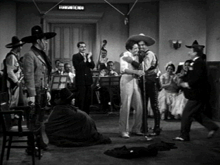

| Gay Desperado,The/B+,B |
| Image/1936/87/FS 1.33/BW |
A thoroughly charming musical comedy from sophisticated director Rouben Mamoulian. Songs are well integrated into the silly plot and Mamoulian's light touch plumps up the billowy material beyond its script with beautiful screen compositions and artful use of shadows.
 |
| I just love that voice. ©Image |
Just across the border a Mexican desperado, inspired by watching
American Gangster movies, seizes the opportunity to emulate his North of the border
counterparts by kidnapping a rich man's song and his girl. The newest gang member is would-be opera
singer Chivo. He has been forcibly drafted into the gang by gang honcho Braganza, but Chivo wants
no part of the bad man operation.
Nino Martini provides equal parts sliced ham and a melodic tenor's voice
as Chivo. Leo Carrillo catches the Klieg lights on his teeth as Mexican bandit chief Braganza.
Carrillo and supporting B movie veteran Harold Huber banter about hilariously with a deadpan look
or two from Mischa Auer added to the comic mix. Ida Lupino is the lady who lights Chivo's fire
while displaying a feisty independence as one of the ransomed pair.
Mamoulian keeps the action flowing with frequent chases and inoffensive songs.
Check out how Mamoulian echoes the saguaro cactus landscape with beautifully posed fire lit Mexican
bandits.
Happily, the source material for The Gay Desperado is in very good
condition. Specs of dirt and a few scratches seldom mar the beauty of the images. Deep blacks and
fine shadow detail reveal the beauty of Mamoulian's moody visual style. Detail is mostly is mostly
on target. The mono sound track is fine, with little evidence of hiss. The Gay Desperado
is a happy artifact from a simpler Hollywood era.


The National Film Preservation Foundation (NFPF) is the nonprofit organization created by the U.S. Congress to save
America's film heritage.

Information on film sound in theaters and home theaters. Lots of helpful information provided in a
handsome interface.

DVD
Demystified makes it all clear.The official Internet DVD FAQ for the rec.video.dvd
Usenet newsgroups.
 Direct from the corridors of the
Home Theater Forum, Home Theater Talk is the newest place on the Net to discuss everything home
theater. Friendly atmosphere and knowledgeable folks are the secret ingredients.
Direct from the corridors of the
Home Theater Forum, Home Theater Talk is the newest place on the Net to discuss everything home
theater. Friendly atmosphere and knowledgeable folks are the secret ingredients.

Selections from the feature archive include articles on
Akira Kurosawa, Frank
Darabont, Blonde Bimbos, Hollywood Street Gangs, or Vietnam: The
Hollywood Pariah, and many more....
Catch the Hollywood take on Blonde Bimbos by clicking on the
image above.

The Movie Poster Archive includes extensive poster images from the films of stars like Susan Hayward, Kirk Douglas, Katharine Hepburn and many more. Our featured star is Danny Kaye.